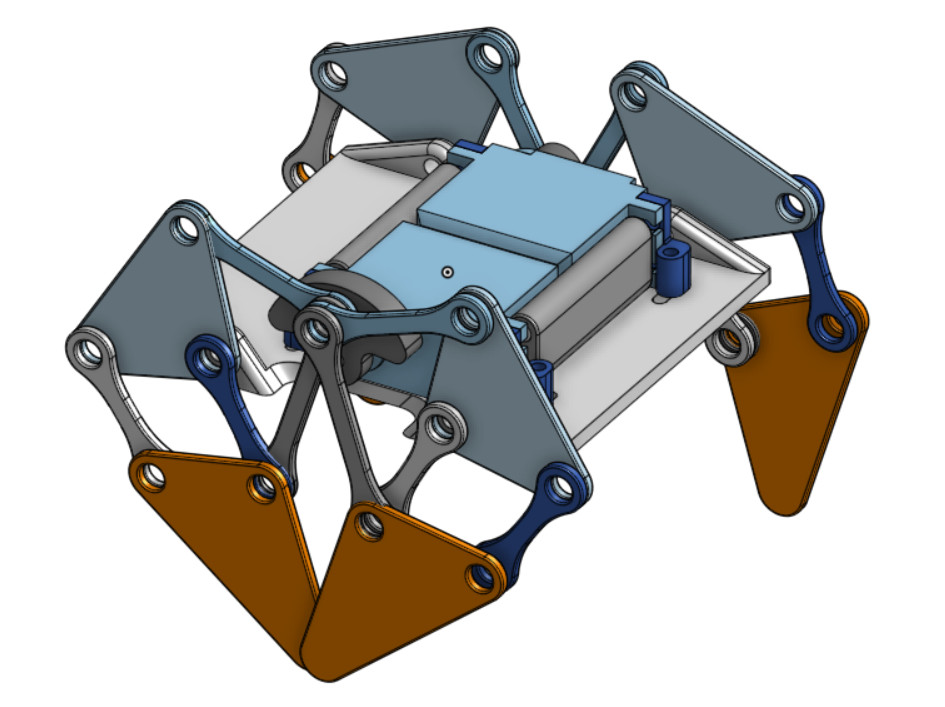

主動式行走機構 - Active Walker - 以馬達驅動行走
分組專題人員: 六人
設計模擬: 三人
組立製作: 三人

被動式行走機構 - Passive Walker - 以重力在斜坡或移動平台上行走
分組專題人員: 六人
Biped walking robot control with passive walker model by new VSC servo
Actuating a Simple 3D Passive Dynamic Walker
The Simplest Walking Model: Stability, Complexity, and Scaling
https://github.com/kenaycock/Six-Bar-Walking-Mechanism
專題目的: 創新步行輔助機構之設計與應用